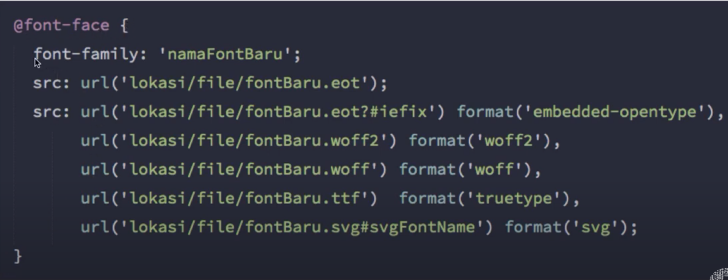
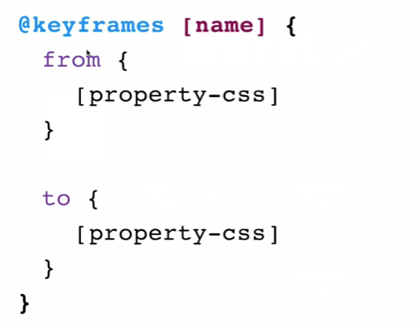

Pada video ini akan mempelajari property-property yang sering digunakan pada css3
property border-radius:; digunakan untuk membuat sisi-sisi elemen akan menumpul. perlu diingat, bahwa ketika border-radius digunakan, isi dari elemen akan keluar dari elemen tersebut karena perubahan pada elemennya.
Mengatasi hal diatas, bisa menggunakan property oveflow:hidden; sehingga isi dari elemennya akan disembunyikan ketika berada diluar dari elemen tersebut.
Property Border Radius dan Turunannya:
border-radius:value;
border-radius:valueAtasKanan valueBawahKanan valueBawahKiri valueAtasKiri;
border-top-right-radius:value;
border-top-left-radius:value;
border-bottom-right-radius:value;
border-bottom-left-radius:value;
CSS3 memiliki property opacity yang dapat digunakan untuk membuat elemen menjadi transparant
property opacity menginheritance/menurunkan propertynya ke elemen didalamnya. sehingga, ketika parentnya memiliki opacity, childnya tidak bisa memiliki warna solid
Property opacity dan Turunannya:
opacity:value; valuenya antara 0-1, 0 sangat transparant - 1 tidak transparant
Pada episode sebelumnya, property opacity digunakan untuk melakukan transparansi tetapi ke elemennya, dan opacity menginheritance property tersebut ke childnya. maka, ketika parentnya transparant, childnya tidak akan pernah bisa solid.
Oleh karena itu, untuk mengatasinya bisa dengan property RGBa atau HSLa, property ini melakukan transparansi ke warna bukan lagi ke elemennya. tetapi property ini tidak bisa melakukan transparansi ke image
Property background-color dan Turunannya:
background-color: rgba(value, value, value, valueOpacity);
background-color: hsla(value, value, value, valueOpacity);
Property box-shadow:; digunakan untuk memberikan bayangan ke elemennya
Property Box Shadow dan Turunannya
box-shadow:inset(opsional) x-offset(px) y-offset(px) blur(px) spread(px, opsional) color(name, rgba, hex, dll);
Implementasi value inset dan value spread
Multiple Shadow: box-shadow dapat memberikan lebih dari satu shadow ke elemen dengan memisahkan value pada property box-shadow dengan koma (,)
Contoh Multiple Shadow:
box-shadow:inset x-offset y-offset blur spread color,inset x-offset y-offset blur spread color;
maka pada elemen ini nantinya akan memiliki 2 shadow. bisa ditambahkan lagi dengan memberi value dengan dipisahkan koma (,)
property text-shadow memberikan bayangan pada text. value property sama seperti box shadow hanya saja tidak ada inset dan spread, dan bisa juga memiliki multiple shadow.
Sintaks properti text-shadow:
text-shadow:inset x-offset y-offset blur color;
Teknik untuk memberikan warna gradasi pada elemen: linear dan radial gradient
Linear Gradient memberikan warna gradasi secara linear, linear gradient membutuhkan minimal 2 warna dan bisa memiliki lebih dari 2 warna. tetapi, linear gradient ini bukan property css3 tetapi value dari property background-image
Color stop: digunakan untuk mengatur antar warna yang digunakan sebagai gradasi. penerapannya dengan menaruh nilai persen atau px di warna yang dijadikan gradasi
Sintaks linear-gradient:
background-image: linear-gradient(sudut | arah, warnaAwal x%, warnaAkhir x%, ..., warnaN x%)
value sudut menggunakan derajat: penulisannya adalah dengan angka diikut dengan deg. cth: background-image: linear-gradient(90deg, red,green)
value dengan arah penulisannya: background-image: linear-gradient(to left, red, green)
List value arah:
Radial Gradient: memberikan gradasi warna dengan cara radial (melingkar)
Sintaks
Sederhana
background-image: radial-gradient(warnaAwal x%, warnaAkhir x%, ..., warnaN x%)
Full Sintaks
background-image: radial-gradient(tipe jangkauan at posisi-y posisi-x, warnaAwal x%, warnaAkhir x%, ..., warnaN x%)
Value tipe: elipse (default) atau circle
Value jangkauan: jarak dari pusat gradient ke sisi terluarnya: closest-corner, closest-side, farthest-corner, farthest-side
Value posisi: digunakan untuk memindahkan pusat gradasi. posisi-x: top, center, bottom, px. posisi-y: left, center, right, px
property @font-face digunakan untuk mengelola font pada css3 yang kita gunakan
Beberapa cara mengelola font: google font (harus online jika menggunakan link href) atau @font-face property css3
Untuk menggunakan @font-face, kita perlu mendownload dahulu file fontnya dan ikuti sintaks dibawah
Sintaks Font Face:
Untuk web, lebih baik gunakan tipe WOFF untuk font pada website dibanding TTF/OTF
web font generator digunakan untuk mengubah tipe font. misal dari ttf ke woff atau yang lainnya.
Web Generator ada di website Font Squirrel
Vendor prefix adalah sintaks khusus yang harus ditambahkan pada beberapa property CSS3 agar dapat dijalankan di browser lain
sintaks spesifik berbeda tiap browser/vendor
Vendor Prefixes
(Chrome,Safari,Opera)
(Firefox)
(Internet Explorer)
(Opera)
Daftar Property CSS3 yang butuh Vendor Prefix dari plugin emmet atau website berikut:
Web 1 Web 2 Web 3Property filter digunakan untuk memberikan efek visual pada gambar, background atau border
Sintaks properti filter
filter: tipeFilter();
List tipe filter
property transform yang digunakan untuk memanipulasi format visual dari elemen HTML. transform bisa 2D dan 3D
Sintaks property transform
transform: fungsi();
property form bisa digunakan kombinasi antar fungsi()nya
value fungsi ada beberapa:
memperbesar/memperkecil
memutar: bisa kombinasi semua rotate, rotateX dan Y dipisah dengan spasi
membuat condong/miring
mengubah posisi
Property transition ini digunakan untuk mengubah nilai dari property HTML secara halus
transition vs. animation: perbedaannya hanya pada kondisinya, transition hanya memiliki kondisi awal -> kondisi akhir, diantara kondisi itu disebut transisi. animasi memiliki banyak keyframe
Sintaks property transition
transition: property(opsional) durasi(s/ms) fungsi(opsional) delay(s/ms, opsional)
gunakan property transition pada kondisi awal
value property defaultnya all, dan nama-property: ini digunakan untuk mengatur yang mana saja yang ditransisi atau none
Tipsnya: gunakan sebuah div atau kontainer agar transisinya jauh lebih baik
fungsi transisi / timing function
property transition: fungsi; : nilainya ease (default), ease-in, ease-out, ease-in-out, linear, cubic-bezier(w,x,y,z)
property transition: delay(s/ms)
format kombinasi dipisahkan dengan , (koma): transition: margin-left 2s, transform 2s 3s;
Sintaks untuk Animation
animation: namaFungsiAnimation durasi timing-function delay iteration-count direction fill-mode play-state
Gunakan persen untuk pembuatan keyframes animation agar mudah membuat beberapa keyframe antar kondisi awal dan akhir
Daftar Values dari property Animation Disini